学術文献の電子化がどんどん進んでいます。とはいえ、やはり紙媒体の本として手元に置いて参照したいという時にはプリントアウトするわけで、さらに、ページ数が多ければ製本したいという場合もあります。製本機が使えればそれに越したことはないのですが、家庭用の工具を使って手軽に製本することも可能です。
今回の製本方法は次のサイトを参考にさせていただいています:
BindUp 手作り製本情報サイト
このサイトの「無線綴じ 並製本 (しおり紐なし)」とほとんど同じですが、表紙と背表紙の作り方が若干違います。
なお、このページを参考にされる際は自己責任でお願いします (お約束の一言)。
特に、アイロン、ホットボンド共に高温になるものですから、十分ご注意を。
まず, 本文をプリントアウトするついでに、厚めの紙に表紙を印刷しておきます。表紙用の厚紙は今回は A4 で前後二枚用意しています(ただし、表紙を作らずに後述の背表紙だけで済ませてしまう場合も多いです)。
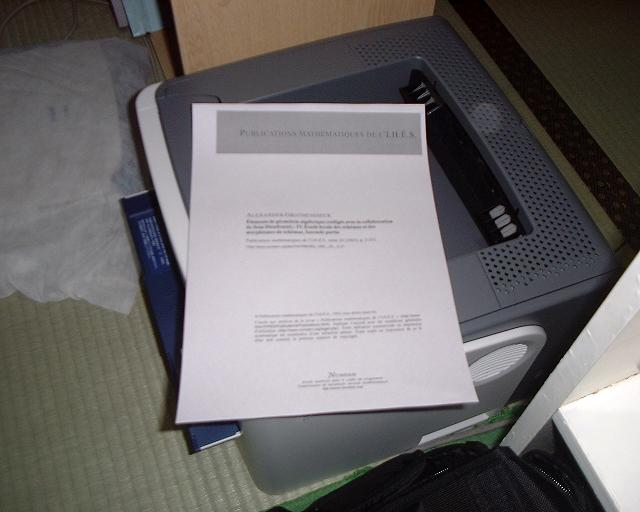
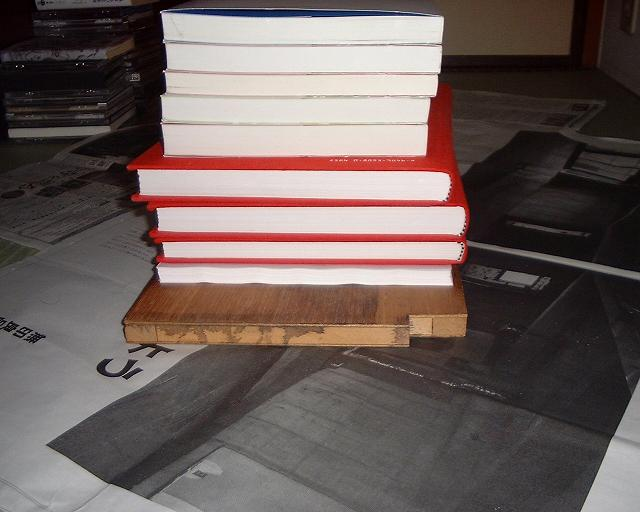
本文が丸まってクセがついてしまっている場合は、圧力をかけてまっすぐにしておいたほうが良いです (右の写真で本に押さえつけられているのが今回のテキスト)。
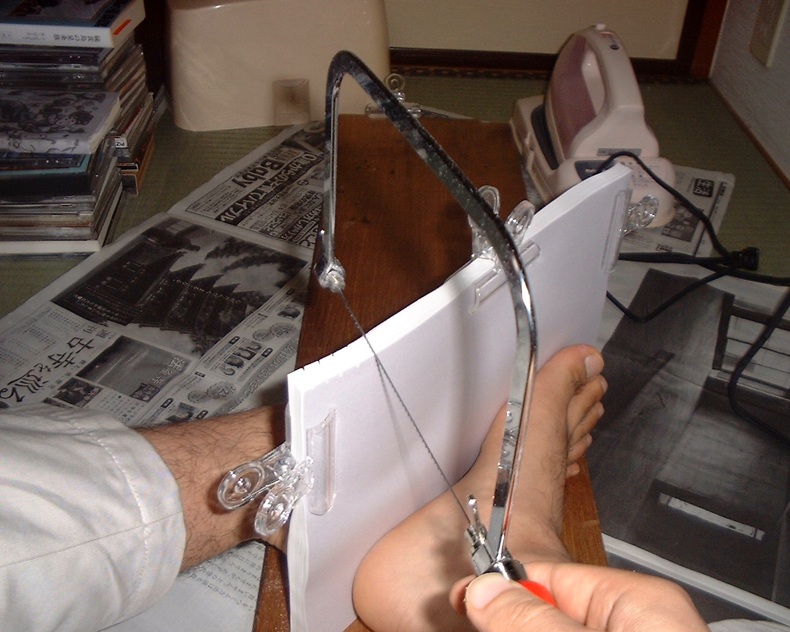
次に、前後二枚の表紙と本文をクリップで挟んで、背の部分にのこぎりで切れ込みを入れます。切れ込みの間隔は 5〜10 mm くらい。これは背固めのボンドをよくなじませるためです。できればクリップは写真のものよりは大きめのものを用意したほうが良いでしょう。
ちなみに、この状態でのこぎりを挽くには支え手が必要ですが、それが写っていないのは左手にカメラを持っていたからです…(以下同様)。
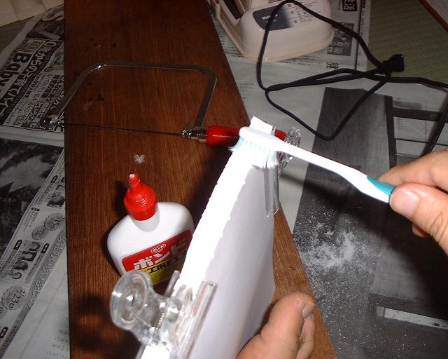
次に、古歯ブラシを使って、木工用ボンドを背の部分に塗っていきます。
下の写真は、塗り終わった状態です。
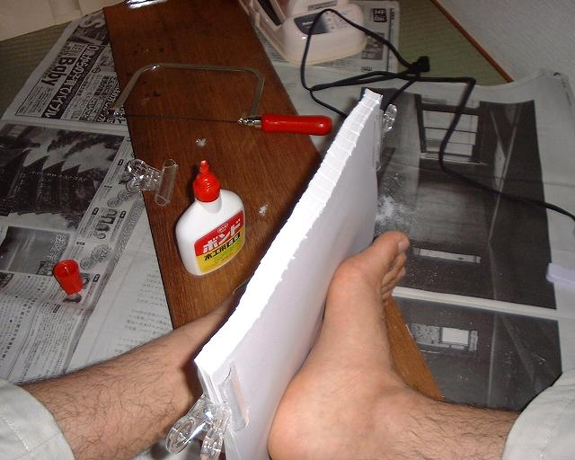
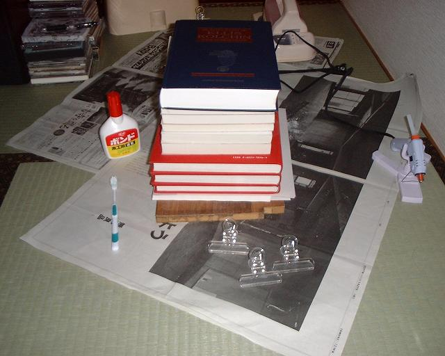
塗り終わったら、クリップを外し、圧力をかけた状態でボンドを乾かします。
重しは、重ければなんでも良いですが、ここでは本を使っています。その場合は本にボンドが付かないように、いらない紙をはさんでおきましょう。
下の写真は、ボンドが乾いた後、いらない紙を取り除いた状態です。
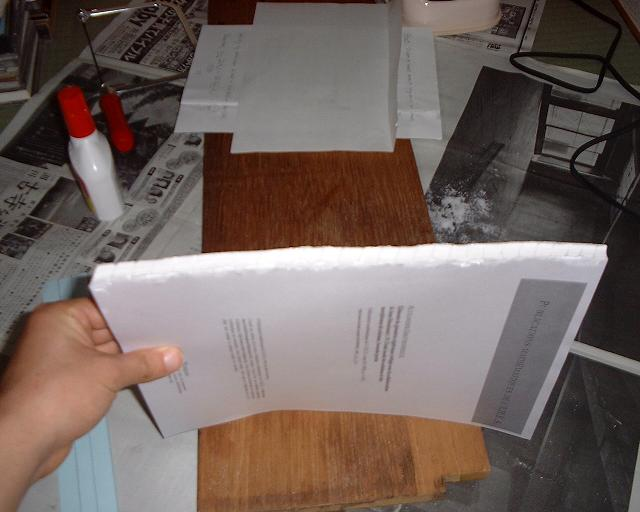
さて、下固めのボンドが乾くのを待っている間、別の作業を進めましょう。
(1) 古歯ブラシを洗う。再利用できるよう、すぐに洗っておきます。
(2) ホットボンドとアイロンをあたためておく (頃合いを見計らって)。そして、
(3) 背表紙を作る。
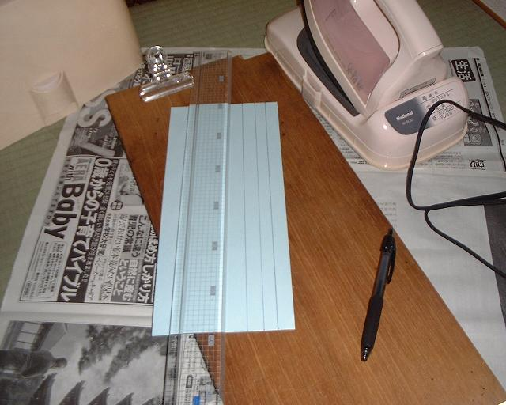
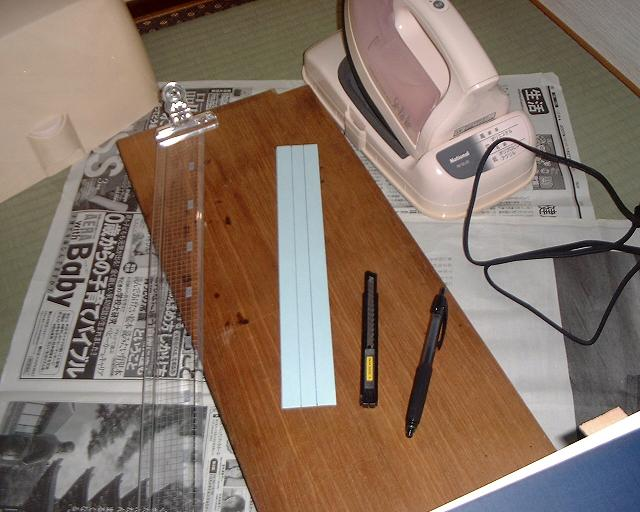
A4 の厚紙に三本縦線を引いて切り離します。縦線の間隔は 15 mm, 本文の厚さ, 15 mm, としています。
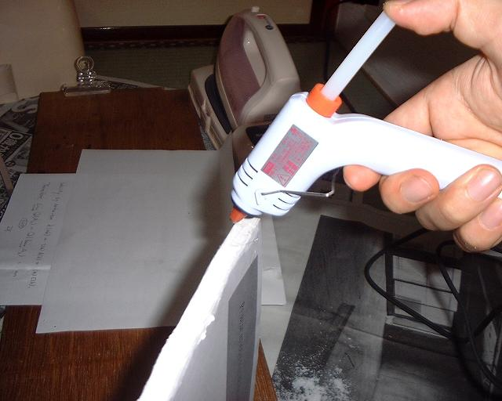
下固めが終わったら、ホットボンドを背の部分に塗っていきます。
例によって、下の写真は、塗り終わった状態です (あんまりよく分りませんが)。
ホットボンドは塗った後すぐに固まってしまいますが、後で背表紙をかぶせてアイロンで再び溶かすので、気にしなくてもかまいません。
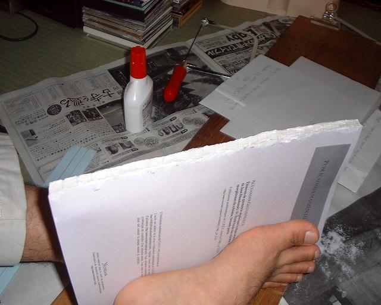
それから、表紙の端の背側の部分にも、前後とも１列にホットボンドを塗っておきます。これは、あまりたっぷり塗ると後で背表紙からボンドがはみ出してしまうので注意しましょう。
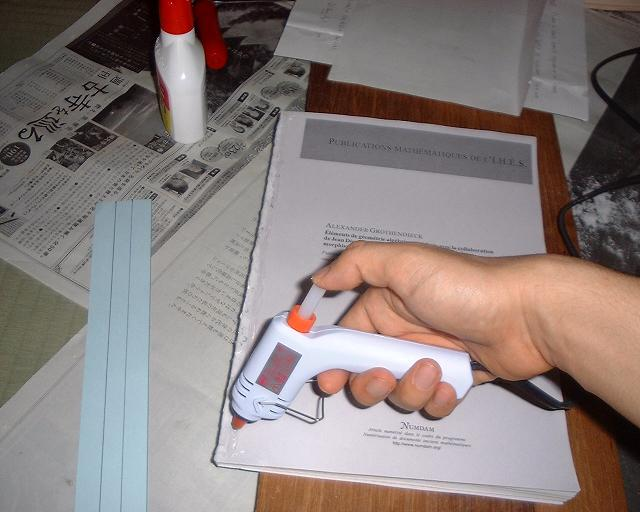
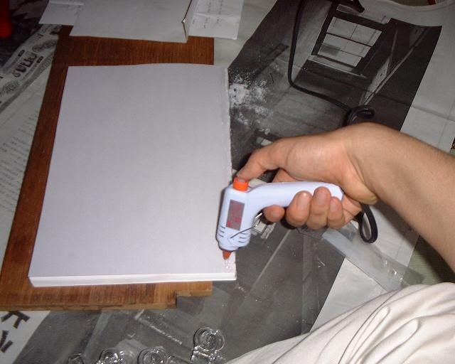
そうしたら、背表紙をかぶせて、背の部分→折って表紙の端の部分、という順番で、上からアイロンをかけていきます。写真ではスチームアイロンを使っていますが、もちろんスチームを出してはイケマセン (^^;。この段階でのコツは、「あせらず、ゆっくりとボンドを溶かす」です。焦ってはいけません。ゆっくりと背表紙をくっつけていきましょう。
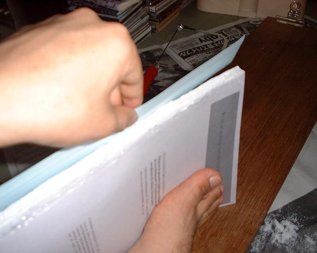
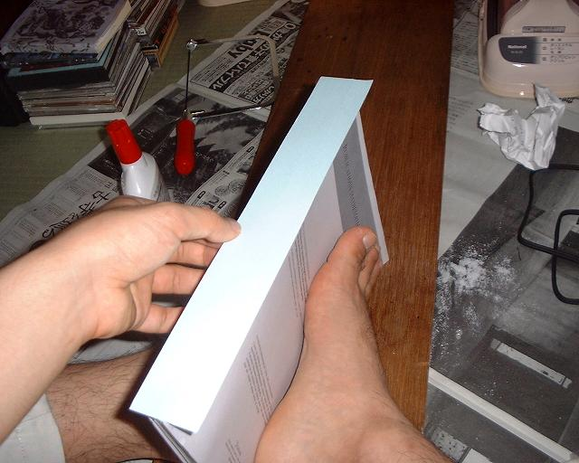
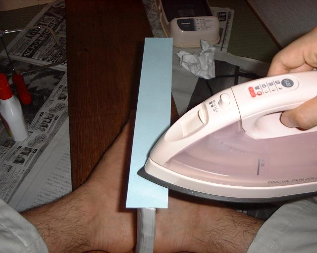
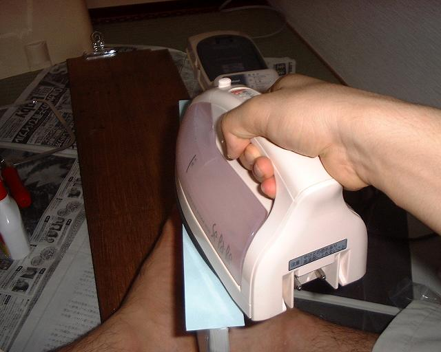
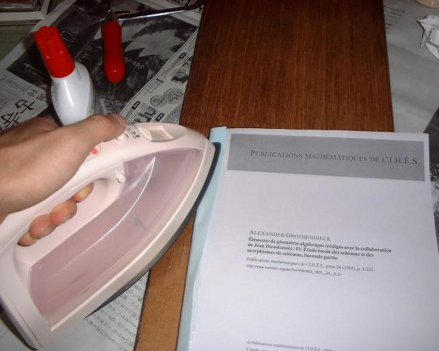
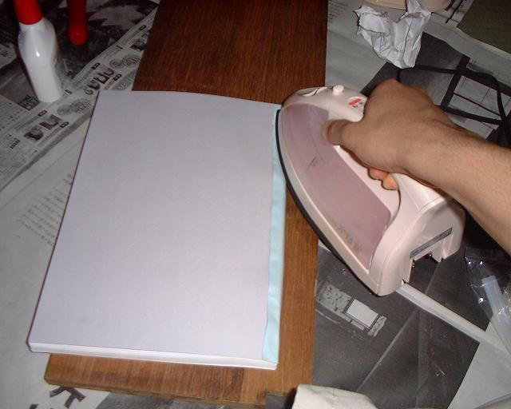
もうひとつ注意として、アイロンが本文に当たらないように気をつけましょう。
アイロンが印字の部分にかかると、インクが溶けてぐちゃぐちゃになってしまいます
(一回それで表紙と最初の方のページをダメにしたことがあるのです (^^;)。
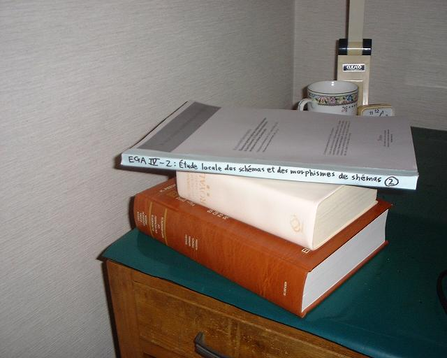
ホットボンドが冷えて固まったら完成です。背表紙にタイトルを書き込むと良いでしょう。
さて、こうやって Web ページにまとめてみると、本文を押さえつける固定器具が欲しくなりますね。足で挟んで作業するのも疲れるし…。今後の課題としては、二枚の板で本文を押さえつける製本器の自作ですかね。この話は一回で終わるつもりでしたが、(その２)に続くかも…。
{kind=link}
{kind=link}
{kind=link}
{kind=link}
{kind=link}
{kind=link}
{kind=link}
{kind=link}
{kind=link}
{kind=link}
{kind=link}
{kind=link}
{kind=link}
{kind=link}
{kind=link}
{kind=link}
{kind=link}
{kind=link}
{kind=link}
{kind=link}
{kind=link}